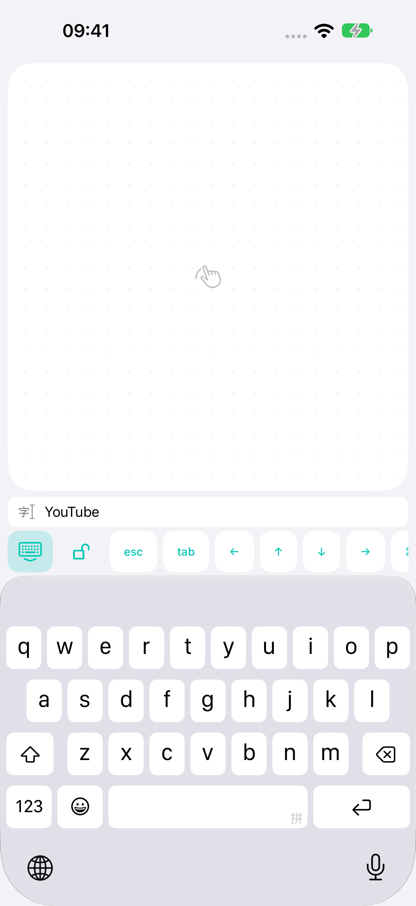

↖
随手可用的鼠标
单指移动光标，双指滚动。支持左键、右键、双击，以及按住左键移动窗口或调整大小。
用手机移动光标、滚动和输入。从 iPhone 或 Android 连接 Mac，或试用 Windows Wi-Fi 测试版。
免费 · Mac：macOS 14+ · Windows 测试版：Windows 11 x64
01蓝牙或家庭 Wi-Fi
02控制时无需互联网
03无需账户，无广告
沙发上、床上、喜欢的椅子上。
单指移动光标，双指滚动。支持左键、右键、双击，以及按住左键移动窗口或调整大小。
使用手机键盘输入，上方可预览文字，方便纠错，同时保留宽敞触控板。
支持惯性滚动、调度中心、切换桌面，以及在兼容应用中通过双指捏合缩放。
Mac 支持直连蓝牙和家庭 Wi-Fi。Windows 测试版使用家庭 Wi-Fi。指令经过加密，不通过外部服务器。

小屏幕，多一份方便。
在 Mac 上打开搜索，用手机输入。在键盘上方检查文字、修改错字，再按回车。
标签页控制、方向键、Escape、Tab、复制和粘贴都在同一工具栏中。输入的文字不会保存到磁盘。
了解隐私保护 ↗只需设置一次
下载 Mac 或 Windows 版 BridgeX。在 Mac 上授予辅助功能权限；在 Windows 出现提示时允许 BridgeX 访问本地网络。
让两台设备连接同一家庭网络。Mac 也支持直连蓝牙。
在电脑 BridgeX 中显示二维码，用 iPhone 或 Android 的 BridgeX 扫描。两款应用的安装顺序不限。
连接之前
仅下载应用时需要。控制通过本地 Wi-Fi 网络进行；Mac 也支持直连蓝牙。Windows 测试版目前使用 Wi-Fi。
Apple 芯片、macOS 14+ 的免费 BridgeX 配套应用，或 Windows 11 x64 公开测试版。手机应用需单独安装。
Mac 必须开机、登录用户账户并运行 BridgeX。不支持唤醒或登录前控制。
不需要。通过二维码配对设备。开发者不会收到您输入的文字或操作历史。
是的。首个版本免费，无 App 内购买、订阅或广告。
BridgeX 通过标准键盘快捷键支持滚动、捏合缩放和系统手势。效果取决于应用和 Mac 设置。不模拟连续硬件缩放或力度触控。
BRIDGEX 更新记录
iPhone / iPad · 1.0.1 (26)
Android · 0.1.18 (19)
iPhone / iPad · 1.0.1 (26) · Android · 0.1.18 (19)